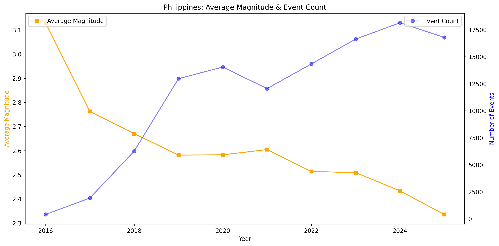
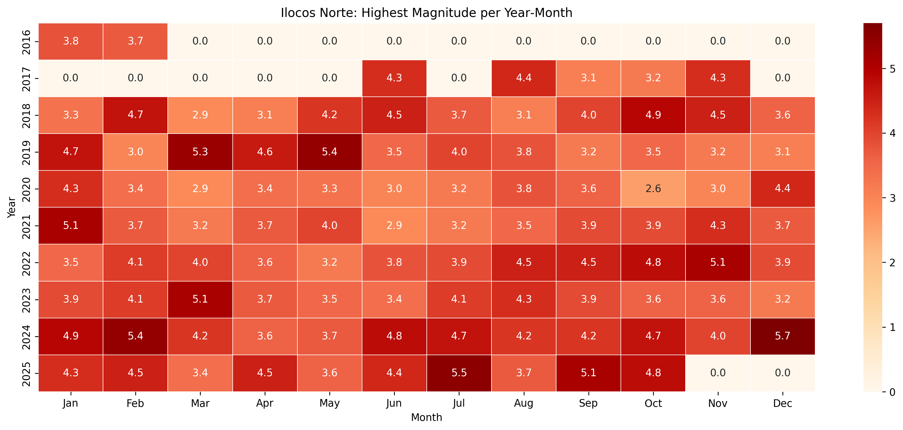

Philippines → Ilocos Norte:
Earthquake Exploratory Data Analysis
Introduction
This exploratory analysis presents paired, side‑by‑side views for the Philippines and Ilocos Norte to compare frequency, intensity profiles, and peak windows over recent years.
The goal is descriptive comparison rather than prediction, so national context and local behavior can be read together at a glance.
Key Questions
- Do certain months consistently show higher earthquake activity?
- How have yearly event counts changed in recent years at national and Ilocos Norte scales?
- Are higher event counts linked to stronger earthquakes on average?
- When do the highest monthly magnitudes occur, and how do Ilocos Norte monthly maxima compare with national maxima?
Methods
Automation
Charts and the HTML summary are rebuilt automatically by a GitHub Actions workflow on a weekly schedule and can also be triggered manually when needed.
The workflow runs every Sunday at 16:00 UTC, which corresponds to Monday 00:00 Philippine Standard Time (UTC+8).
Data source
Earthquake records come from the PHIVOLCS catalog accessed via Kaggle at run time; the workflow loads the latest available CSV and regenerates charts and a compact HTML summary to the docs folder for publishing.
Data coverage
Only records with a valid Philippine local timestamp are included; results are presented for the Philippines as a whole and for Ilocos Norte, identified using the General_Location field.
Preparation
- Convert event time to a proper datetime and derive year, month, hour, and day of week for grouping.
- Classify magnitudes as Minor (<4.0), Moderate (4.0–5.99), and Significant (≥6.0).
Analysis
- Frequency: annual counts and a heatmap of monthly activity for both national and Ilocos Norte views.
- Magnitude: histogram of magnitudes and bar chart of category counts (Minor/Moderate/Significant).
- Trends: per year, plot average magnitude together with number of events to compare strength vs activity.
- Extremes: for each calendar month, select the strongest quake and retain its time and location; show monthly peaks in a heatmap and summarize locations that most often rank first, including each location’s single highest monthly maximum and when it occurred.
- Timing: show daytime (06:00–17:59) vs nighttime (18:00–05:59) shares for all events and for potentially felt events (magnitude ≥4.0).
Outputs
Export static PNG charts and a compact HTML page highlighting top epicenters, the largest monthly maximum at each, and day/night splits; the weekly workflow refreshes all outputs when new PHIVOLCS data are available or when manually triggered.
Earthquakes per Year
Philippines

Ilocos Norte

2022 stands out at both scales; Ilocos Norte’s proportional jump is larger (≈200 → 600+), then both series stabilize in later years.
Monthly Earthquake Counts by Year
Philippines
Ilocos Norte

No single month is consistently elevated; higher months appear as short bursts rather than a repeating seasonal peak at either scale.
Magnitude Distribution
Philippines

Ilocos Norte

Distributions are right‑skewed and dominated by small magnitudes; high totals mostly reflect many small quakes.
Magnitude Categories
Philippines

Ilocos Norte

Minor events vastly outnumber Moderate and Significant at both scales, indicating typical shaking is low.
Average Magnitude & Event Count
Philippines
Ilocos Norte
Counts and averages can diverge—busy years do not necessarily have higher average magnitudes; recent national averages dip slightly despite higher counts.
Highest Magnitude per Year‑Month

Ilocos Norte
Peaks occur in specific windows but do not repeat month after month; Ilocos Norte maxima are generally lower than national maxima.
Results & Interpretation
- Q1 — Months: No month is consistently “active”; elevated months are episodic rather than seasonal.
- Q2 — Yearly counts: Both series rise into 2022—Ilocos Norte proportionally more—then settle to steadier levels afterward.
- Q3 — Counts vs strength: More quakes do not imply stronger quakes; average magnitude is stable to slightly lower nationally.
- Q4 — Monthly maxima: Peak months appear irregularly; Ilocos Norte monthly highs are typically below national highs.